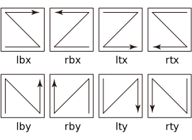

API documentation¶
sati¶
-
class
sati.Model(image, rsp=None, dist=None, poly=None, decay=None, prior=None, roi=None)¶ Class for describing a model.
- Parameters
image (
numpy.ndarray) – An input image.rsp (
numpy.ndarray) – An initial guess of the responsibility. This takes a 3D array. The first dimension is terrace, and the second and third dimensions are positions.dist (
sati.distributions.Distribution) – An initial guess of a distribution.poly (
sati.planes.Poly) – An initial guess of a polynomial plane.decay (
sati.planes.Decay) – An initial guess of a decay plane.prior (
sati.distributions.Distribution, defaultNone) – A prior distribution fordist.loc.roi (
numpy.ndarray, defaultNone) – A 2D array that has the same shape as the image array and specifies an region of interest. Set pixels to be calculated to 1. By default, the whole area is used for the calculation.
-
objective¶ The first element is for the main EM loop, and the second element is for the M step. If the quick method is used, the second one is not used.
- Type
listofsati.objective.Objective
-
image¶ A copy of the input image.
- Type
numpy.ndarray
-
subtracted¶ An image subtracted by an estimated model plane.
- Type
numpy.ndarray
-
rsp¶ An estimated responsibility.
- Type
numpy.ndarray
-
dist¶ An estimated distribution
-
poly¶ An estimated polynomial plane
- Type
-
decay¶ An estimated decay plane
- Type
-
prior¶ An estimated distribution
-
n_iter¶ A number of iterations run by the main EM loop to reach the specified tolerance.
- Type
int
-
optimize(method='auto', maxiter=256, tol=1e-07, verbosity=1, options=None)¶ Optimize model parameters using the expectation-maximization (EM) algorithm.
- Parameters
quick (
bool, defaultTrue) – Use the quick method when possible, that is, Normal or Cauchy distribution is used,decayisNone, andpriorisNone.method ({‘auto’, ‘l-bfgs-b’, ‘adam’, ‘quick’}, default
auto) – The method used for the optimization in the M-step. Whenauto,quickis used ifdistis the normal or Cauchy distribution, otherwisel-bfgs-bis used.maxiter (
int, default 256) – The maximum number of iterations of the main EM loop.tol (
float, default 1e-7) – The fractional tolerance to stop the iteration of the main EM loop.verbosity ({0, 1, 2}, default 1) –
Set 1 to show a summary of result, 2 to show values of objective function in the console during calculation, and 0 to show nothing.
Note
If you use the Win32 console, 1 (default) or 0 is recommended because the values are not shown neatly. (The Win32 console does not support the ANSI escape code.)
options (
dict, defaultNone) –A dictionary of optimizer options. If
None, the default value different for each optimizer is used.For
method=='l-bfgs-b', see scipy.optimize.minimize(method=’L-BFGS-B’)For
method=='adam', seesati.optimize.minimize().
-
pickle(file)¶ Pickle a model.
This is a wrapper of the following.
with open(file, 'wb') as f: pickle.dump(self, f)
- Parameters
file (str) – A path-like object of the file to be saved.
-
static
unpickle(file)¶ Unpickle a model.
This is a wrapper of the following.
with open(file, 'rb') as f: return pickle.load(f)
- Parameters
file (str) – A path-like object of the file to be opened.
-
class
sati.GuessInitRsp(array, n, threshold, seeds=None, min_size=10)¶ Class for making a guess of initial responsibility.
- Parameters
array (array-like) – image array
n (
int) – Number of terracesthreshold (
float) – When difference of values between adjacent pixels is below this threshold, those pixels are regared in the same terrace.seeds (array-like of
tuple) – Use this as initial locations of clustering, if given. Each tuple denotes an initial location. If number of tuples is less thann, random initial locations are used for the rest.min_size (
int, default 10) – Minimum number of pixels of a terrace.
-
guess¶ An array of suggested initial responsibility
- Type
numpy.ndarray
-
image¶ An array of an image shown by show(). A value at each pixel denotes a terrace in which the pixel is assigned. -1 means unassigned.
- Type
numpy.ndarray
-
show(**kwargs)¶ Show an image of suggested initial responsibility.
- Parameters
**kwargs – keyword parameters to be passed to matplotlib.pyplot.imshow()
sati.distributions¶
-
class
sati.distributions.Distribution(loc=None, scale=None)¶ A base class to construct specific distribution classes.
All distributions take
locandscaleas keyword parameters to adjust the location and scale of the distribution, just as scipy.stat, unless otherwise noted.Optimized parameters are stored in attributes of the same name.
-
class
sati.distributions.Norm(loc=None, scale=None)¶ Bases:
sati.distributions.DistributionClass for normal distribution,
\[p(x|\mu, \sigma) = \dfrac{1}{\sqrt{2\pi\sigma^2}} \exp\left\{-\dfrac{(x-\mu)^2}{2\sigma^2}\right\}\]where \(\mu\) and \(\sigma\) are the location and scale parameter, respectively.
- Parameters
loc (array-like, default
None) – Initial guess of the location parameter. By default, this is automatically calculated.scale (array-like, default
None) – Initial guess of the scale parameter. By default, this is automatically calculated.
-
loc, scale Optimized parameters.
- Type
numpy.ndarray
-
class
sati.distributions.Cauchy(loc=None, scale=None)¶ Bases:
sati.distributions.DistributionClass for Cauchy distribution.
\[p(x|\mu, \sigma) = \dfrac{1}{\pi} \dfrac{\sigma}{(x-\mu)^2+\sigma^2}\]where \(\mu\) and \(\sigma\) are the location and scale parameter, respectively.
- Parameters
loc (array-like, default
None) – Initial guess of the location parameter. By default, this is automatically calculated.scale (array-like, default
None) – Initial guess of the scale parameter. By default, this is automatically calculated.
-
loc, scale Optimized parameters.
- Type
numpy.ndarray
-
class
sati.distributions.T(loc=None, scale=None, df=None)¶ Bases:
sati.distributions.DistributionClass for Student’s t distribution,
\[p(x|\mu, \sigma, \mu) = \dfrac{\Gamma((\nu+1)/2)}{\Gamma(\nu/2)\sigma\sqrt{\pi\nu}} \left\{1+\dfrac{1}{\nu} \left(\dfrac{x-\mu}{\sigma}\right)^2\right\} ^{-(\nu+1)/2}\]where \(\mu\), \(\sigma\), and \(\nu\) are the location, scale, and degree of freedom parameter, respectively.
- Parameters
loc (array-like, default
None) – Initial guess of the location parameter. By default, this is automatically calculated.scale (array-like, default
None) – Initial guess of the scale parameter. By default, this is automatically calculated.df (array-like, default
None) – Initial guess of the degree of freedom. By default, this isnumpy.ones_like(loc).
-
loc, scale, df Optimized parameters.
- Type
numpy.ndarray
-
class
sati.distributions.VonMises(*, loc=0.0, scale, kappa=[1.0])¶ Bases:
sati.distributions.DistributionClass for von Mises distribution.
Note
This class is intended as a prior distribution for the location parameter \(\mu\) of either
sati.distributions.Norm,sati.distributions.Cauchy, orsati.distributions.T.\[p(\mu|c_0, \varphi_0, \kappa) = \dfrac{1}{2\pi I_0(\kappa)} \exp\left\{ \kappa\cos\left(\dfrac{2\pi\mu}{c_0}-\varphi_0\right) \right\}\]where \(\varphi_0\), \(c_0\), and \(\kappa\) are the location, scale, and concentration parameters, respectively. \(I_0\) is the modified Bessel function of the first kind at order 0.
This is slightly different from the standard form of von Mises distribution to estimate a unit height of steps.
- Parameters
loc (
float, default 0) – Initial guess of the location parameter \(\varphi_0\).scale (
float) – Initial guess of the scale parameter \(c_0\). This takes an initial guess of a unit height of steps.kappa (array-like, default 1.0) – The concentration parameter. The length of
kappamust be the same as number of terraces. To exclude a terrace from the MAP estimation, set the corresponding element ofkappato 0.
-
loc, scale Optimized parameters.
- Type
float
sati.planes¶
-
class
sati.planes.Poly(degree=1, coef=None)¶ Class for a polynomial plane.
\[f(n) = w_0 + w_1x_n + w_2y_n + w_3x_n^2 + w_4x_ny_n + w_5y_n^2 + \dots\]- Parameters
degree (
int, default 1) – Degree of the polynomial plane.coef (
numpy.ndarray, defaultNone) – Initial guess of \(w_i\). By default, this is automatically caluculated from an input image and an initial guess of the responsibility.
-
coef, plane Optimized \(w_i\) and \(f(n)\), responsibility.
- Type
numpy.ndarray
-
class
sati.planes.Decay(*, tau, coef=None, kind='log', orgdrct='lbx')¶ Class for a decay plane.
\[f(n) = \sum_i A_i\exp(-n/\tau_i) \quad\mathrm{or}\quad f(n) = \sum_i A_i\ln(n+\tau_i)\]- Parameters
tau (
floator array-like) – Initial guess of \(\tau_i\) in the unit of pixels.coef (
floator array-like, default 1) – Initial guess of \(A_i\)kind ({'exp', 'log'}, default 'log') – Decay function.
orgdrct (
str, default ‘lbx’) –Origin and direction of decay specifying chronological order of pixels in an image. The origin is the starting point of scan and the direction is that of fast scan. The origin is described by either ‘lb’, ‘rb’, ‘lt’, or ‘rt’, denoting left bottom, right bottom, left top, and right bottom, respectively. The direction is described by either ‘x’ or ‘y’.
The characters are case-insensitive and have no particular order.
-
tau, coef, plane Optimized \(\tau_i\), \(A_i\) and \(f(n)\), responsibility.
- Type
numpy.ndarray
-
orgdrct¶ Origin and direction of decay.
- Type
str
sati.objective¶
-
sati.objective.calc(dist, t_subtracted, prior=None)¶ Calculate a value of objective function.
- Parameters
dist (a subclass of
sati.distributions.Distribution) – A distribution used in a model.t_subtracted (
numpy.ndarray) – Subtracted one-dimensionalized image.prior (
sati.distributions.VonMises) – A prior distribution.
- Returns
A value of objective function.
- Return type
float
-
class
sati.objective.Objective(maxiter, tol, verbose)¶ Class for an objective function.
- Parameters
maxiter (
int) – The maximum number of iterations of the main EM loop.tol (
float) – The fractional tolerance to stop the iteration.verbose (
bool) – IfTrue, show values of objective function in the console during calculation.
-
value, diff Objective function and its relative difference. Values are appended at each cycle of iterations.
- Type
listoffloat
sati.optimize¶
-
sati.optimize.minimize(fun, x0, *, method='adam', jac, options={'betas': [0.9, 0.999], 'epsilon': 1e-08, 'ftol': 1e-07, 'lr': 0.001, 'maxiter': 256, 'reduction': 0.5})¶ Minimization of scalar function of one or more variables.
The parameters are similar to those of scipy.optimize.minimize.
- Parameters
fun (callable) – The objective function to be minimized:
fun(x) -> floatwherexis an array with shape (n,), wherenis the number of independent variables.x0 (
numpy.ndarray) – Initial guess. Array of real elements of size (n,).method ({'adam'}, default 'adam') – Optimizer.
jac (callable) – A function that returns the gradient vector:
jac(x) -> array_like, shape (n,)wherexis an array with shape (n,).options (
dict) –Optimizer options.
betas :
tupleoffloatepsilon :
float
These are parameters defined in the reference 1.
lr :
float, the learning rate.ftol :
float, the fractional tolerance to stop the iteration.maxiter :
int, the maximum number of iterations.reduction :
float, this value is multiplied tolrwhen the objective function is smaller than that of the last step in the main EM loop.
- Returns
The optimization result. The results are stored in the attributes of
x,success,fun,jac, andnit. See scipy.optimize.OptimizeResult for more details.- Return type
scipy.optimize.OptimizeResult
References
- 1
Diederik P. Kingma, Jimmy Ba, “Adam: A Method for Stochastic Optimization”, arXiv:1412.6980